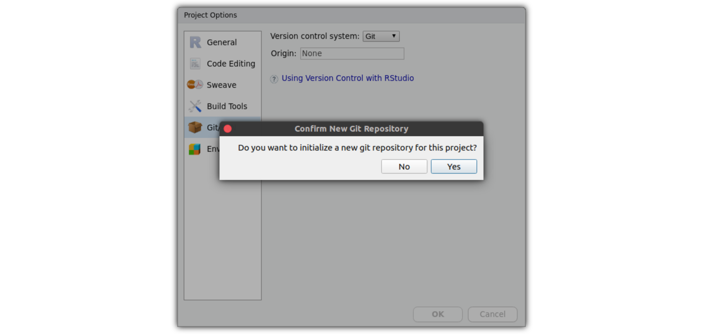

pkg_setup.RmdInitialize the new empty package with {usethis}. You might want to adjust the package location and path of your package to be.
install.packages("usethis") library(usethis) path <- file.path("~/Desktop/testpkg") usethis::create_package(path)
This will open a new Rstudio session that directly opens the new package Project.
You can initialize the git repository directly from within Rstudio. For this you have to open the Project Options… (in the Rstudio Tools menu). There, you can activate version control with Git — this will initialize the git repository.

As for any git repository, we are also going to include a README.md file, indicating how people will be able to install our fancy new package. For this, we need to know the name of the package/ git repository (testpkg in this case) as well as our github user name (k-hench in my case).
Our minimal readme file looks like this:
# The testpkg Package
This is a small demo of a R package created with {usethis}.
It makes use of the helper packages {usethis}, {devtools}, {roxygen2} and {pkgdown} to quickly wrap R code into R packages.
To install this package please run this in R:
`​``
install.packages("remotes")
remotes::install_github("k-hench/testpkg")
`​``
But honestly --- there is not really a good reason for you to install this ^^At this point we are going to create the github instance of the repository. After logging in to github and creating the empty repo there (github.com/k-hench/testpkg), this is what I run to connect the local repository to github (in the Terminal pane of Rstudio) — you can also use a GUI as gitkraken or similar for this task:
git add .
git commit -m "init"
git remote add origin https://github.com/k-hench/testpkg.git
git push -u origin masterYou will need to adjust several details of you package such as the Package Title, Author Name and Package description.
You can update this information in the DESCRIPTION file within the new package.
The template DESCRIPTION file created by {usethis} looks like this:
Package: testpkg
Title: What the Package Does (One Line, Title Case)
Version: 0.0.0.9000
Authors@R:
person(given = "First",
family = "Last",
role = c("aut", "cre"),
email = "first.last@example.com",
comment = c(ORCID = "YOUR-ORCID-ID"))
Description: What the package does (one paragraph).
License: `use_mit_license()`, `use_gpl3_license()` or friends to
pick a license
Encoding: UTF-8
LazyData: true
Roxygen: list(markdown = TRUE)
RoxygenNote: 7.1.0We are going to update the Package Title, Author details and license for now. We can also use the DESCRIPTION file to specify dependencies of your code (other packages and package versions that are needed to run your R code).
After saving the alterations for Title:, Authors@R: and Description: fields, we can add a license by running eg. usethis::use_mit_license() (if you want to use for example the MIT license) in the R console pane of RStudio. This will also alter the License: field of your DESCRIPTION file, but also create the files LICENSE and LICENSE.md in your package folder.
The adjusted DESCRIPTION file then looks like this:
Package: testpkg
Title: Demo of a R package created with {usethis}
Version: 0.0.0.9000
Authors@R:
person(given = "Kosmas",
family = "Hench",
role = c("aut", "cre"),
email = "khench@ab.mpg.de",
comment = c(ORCID = "0000-0003-1119-187X"))
Description: Qucik intro to wrapping R code into R packes using {usethis} {devtools},, {roxygen2} and {pkgdown}.
License: MIT + file LICENSE
Encoding: UTF-8
LazyData: true
Roxygen: list(markdown = TRUE)
RoxygenNote: 7.1.0(If you wanted to include dependencies, you would add the field Depends: and list package names there).
Now, in terms of preparation you are done 😄.
To populate your package with R objects and functions you need to add R scripts to the folder R/.
For demo purposes we are going to add one function and one object to a script called R/demo.R:
indicate_concerns <- function(){ ## give silly warning cat("O Dear!") } demo_table <- data.frame(x = 1:3, y = 4:6)
One added step when wrapping custom R scripts into R packages concerns your documentation of code. Usually you might be a little more verbose in the documentation when writing packages.
Fortunately, there is great help with documenting content of R packages provided by the package {roxygen2}. This package makes it easy to provide structured documentation for your R functions and objets that are also accessible via the help pane of Rstudio (or the R help generally via eg. ?indicate_concerns).
To use this, you need to add a specific comment block into your R script directly before you define the function/ object. The comment blocks that are interpreted as {roxygen2} instructions are indicated by starting with #' (as compared to the standard R comments starting with a plain #).
As mentioned, these comment blocks have a specific structure, particularly they come with several sections that you can include to adjust documentation — these include the First line (title of the Help page), as small one-sentence description, a more elaborate description of the function/ object as well as several tags such as #' @seealso, #' @examples and #' @export.
Particularly the inclusion of the #' @export tag is important, as without this one you function will not be visible after loading your package (library(testpkg), you would need to address it specifically with testpkg:::indicate_concerns()).
After including the documentation of our dummy function and object, this is what the script R/demo.R looks like:
#' Silly Warning #' #' \code{indicate_concerns} prompts a silly warning to the console #' #' This function was included for demo purposes. #' It is used as a dummy function with some elaborate #' documentation. #' #' @examples #' indicate_concerns() #' #' @export indicate_concerns <- function(){ ## give silly warning cat("O Dear!") } #' Dummy Table #' #' \code{demo_table} provides a tiny dummy data set #' #' This data set was included for demo purposes. #' #' @examples #' demo_table #' #' @export demo_table <- data.frame(x = 1:3, y = 4:6)
At this stage you can make use of {roxygen2} and {devtools} to automatize the documentation by running
devtools::document() #> Updating testpkg documentation #> Loading testpkg #> Writing NAMESPACE #> Writing indicate_concerns.Rd #> Writing demo_table.Rd
This has created two documentation files (indicate_concerns.Rd and demo_table.Rd) and it has updated the file NAMESPACE (which makes the function available from your package — the effect of the {roxygen2} tag #' @export)
Hold on — you are almost done 😉.
If you have completed the documentation you can create a package documentation homepage very quickly tanks to the R package {pkgdown}. All that you need for this, is running:
pkgdown::build_site()
This will compile your {roxygen2} documentation, the Readme.md file as well as all Rmarkdown scripts located in the folder vignettes (such as this one) into a single R package homepage that will be located in the docs/ folder.
After pushing the changes to GitHub and activating the right settings in the github repository settings, this can be directly hosted as GitHub pages and is accessible via k-hench.github.io/testpkg (respectively your github user name and the repository name).
Now you are done setting up your package — it can be installed using (your updated version of) remotes::install_github("k-hench/testpkg"). Further help on how to do more sophisticated stuff can be found at the online book R Packages.
Here are the package versions I used 😄:
## R version 4.0.3 (2020-10-10)
## Platform: x86_64-pc-linux-gnu (64-bit)
## Running under: Ubuntu 20.04.2 LTS
##
## Matrix products: default
## BLAS: /usr/local/lib/R/lib/libRblas.so
## LAPACK: /usr/local/lib/R/lib/libRlapack.so
##
## locale:
## [1] LC_CTYPE=en_US.UTF-8 LC_NUMERIC=C
## [3] LC_TIME=de_DE.UTF-8 LC_COLLATE=en_US.UTF-8
## [5] LC_MONETARY=de_DE.UTF-8 LC_MESSAGES=en_US.UTF-8
## [7] LC_PAPER=de_DE.UTF-8 LC_NAME=C
## [9] LC_ADDRESS=C LC_TELEPHONE=C
## [11] LC_MEASUREMENT=de_DE.UTF-8 LC_IDENTIFICATION=C
##
## attached base packages:
## [1] stats graphics grDevices utils datasets methods base
##
## other attached packages:
## [1] pkgdown_1.5.1 roxygen2_7.1.0 devtools_2.3.0 usethis_2.0.1.9000
##
## loaded via a namespace (and not attached):
## [1] Rcpp_1.0.6 bslib_0.2.4 compiler_4.0.3 jquerylib_0.1.3
## [5] remotes_2.1.1 prettyunits_1.1.1 tools_4.0.3 testthat_3.0.2
## [9] digest_0.6.27 pkgbuild_1.2.0 pkgload_1.1.0 lubridate_1.7.9.2
## [13] jsonlite_1.7.2 evaluate_0.14 memoise_1.1.0 lifecycle_1.0.0
## [17] rlang_0.4.10 cli_2.3.0 yaml_2.2.1 xfun_0.21
## [21] emo_0.0.0.9000 xml2_1.3.2 withr_2.4.1 stringr_1.4.0
## [25] knitr_1.31 desc_1.2.0 generics_0.1.0 fs_1.5.0
## [29] sass_0.3.1 rprojroot_2.0.2 glue_1.4.2 R6_2.5.0
## [33] processx_3.4.5 rmarkdown_2.6.6 sessioninfo_1.1.1 purrr_0.3.4
## [37] callr_3.5.1 magrittr_2.0.1 ps_1.5.0 htmltools_0.5.1.1
## [41] ellipsis_0.3.1 MASS_7.3-53 assertthat_0.2.1 stringi_1.5.3
## [45] crayon_1.4.1